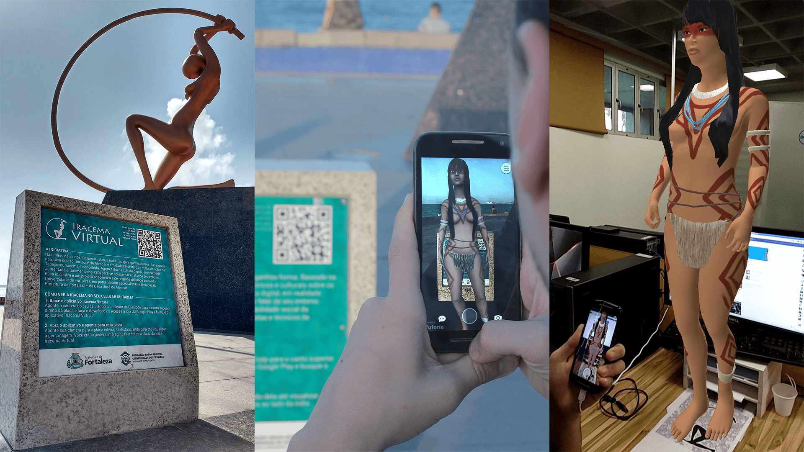
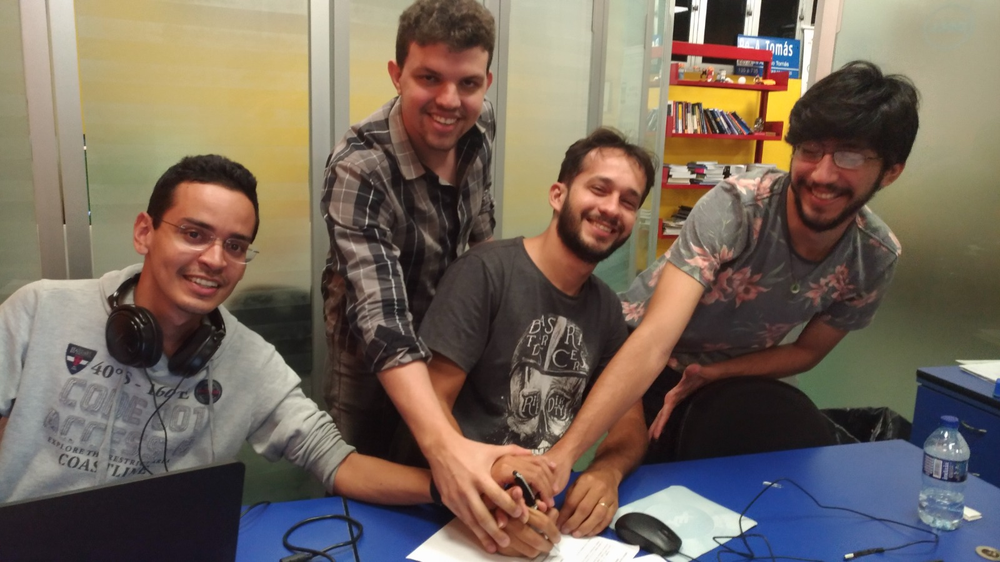
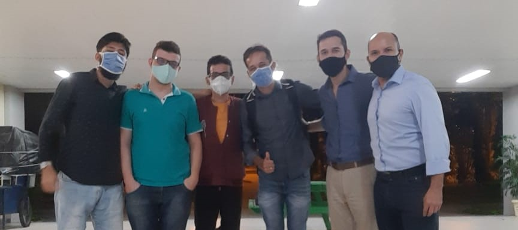

Em 2014 iniciei meu primeiro estágio no laboratório de inovação e tecnologia Vortex,
situado na Universidade de Fortaleza.
Este ambiente de inovação tecnológica, direcionado aos alunos dos cursos de computação,
foi o cenário onde iniciei minha jornada profissional. Entre os 20 estagiários, havia
apenas eu e outros dois da área de comunicação, imersos em um ambiente predominantemente
ocupado por desenvolvedores. Foi ali que meu fascínio pela tecnologia se solidificou.

Minhas principais responsabilidades incluíam o desenvolvimento de interfaces de usuário
(UI) e experiência do usuário (UX), elaborando protótipos e interfaces para posterior
implementação pelos desenvolvedores. Também assumi a liderança em projetos de integração
acadêmica, facilitando reuniões com os clientes, em sua maioria alunos de Mestrado e
Doutorado da Universidade, que buscavam concretizar suas ideias, proporcionando-me uma
valiosa experiência multidisciplinar. Durante esse período, aprendi sobre gestão de
projetos, levantamento de requisitos e metodologias ágeis, aprimorando minhas
competências técnicas e gerenciais. Além disso, explorei a modelagem 3D para realidade
aumentada com o projeto que deu origem ao meu TCC "Iracema Virtual", e desempenhei
diversas funções relacionadas ao design, enriquecendo ainda mais meu repertório
profissional.

Em 2016, ao término do estágio, o coordenador do laboratório reconheceu meu potencial e
assegurou bolsas da Prefeitura de Fortaleza para que eu continuasse contribuindo como
bolsista, assumindo também o papel de coordenador da equipe de design.
Durante minha permanência no laboratório, participei de diversos desafios, como
Hackathons, o Desafio Renault Experience e o Startup Weekend, onde aprendi bastante
sobre empreendedorismo.
Em 2016, um colega bolsista que atuava como desenvolvedor no laboratório me convidou
para participar de um desses desafios, juntamente com outros dois desenvolvedores. Foi
então que fundamos a Besalt Design e Tecnologia.

A Besalt era uma softwarehouse especializada no desenvolvimento de softwares sob
demanda. No entanto, em 2019, enfrentamos dificuldades para conciliar nossos empregos
com as demandas da empresa, o que culminou em seu encerramento.
Em 2020, juntamente com os mesmos colegas com quem fundei a Besalt, iniciamos um novo
empreendimento: a Pesse Tecnologia em Logística, agregando dois novos membros com
experiência em logística.

A Pesse era uma startup no qual criamos um aplicativo voltado para otimizar operações de
empresas de transporte, permitindo a redução de custos e a melhoria da performance dos
veículos por meio da análise detalhada dos dados provenientes dos sensores de telemetria
instalados nos veículos.
Em 2020 o então coordenador do laboratório Vortex se tornou Diretor de Tecnologia da
Universidade de Fortaleza. No ano seguinte, em 2021, ele me convidou para trabalhar na
Diretoria de Marketing com o novo CRM da Universidade, pois era preciso alguém com certa
experiência em tecnologia e comunicação, aceitei a proposta e estou até hoje trabalhando
como analista de CRM para captação de novos alunos.
Em 2023, decidi por deixar a Pesse e concentrar meus esforços no aprimoramento das
minhas habilidades como desenvolvedor. Assumi o compromisso de embarcar em uma jornada
intensiva de estudos com o objetivo de me tornar um profissional exemplar nessa área.
Atualmente,
mantenho-me completamente focado nessa meta, impulsionado pela determinação e pelo
empenho necessários para alcançá-la.